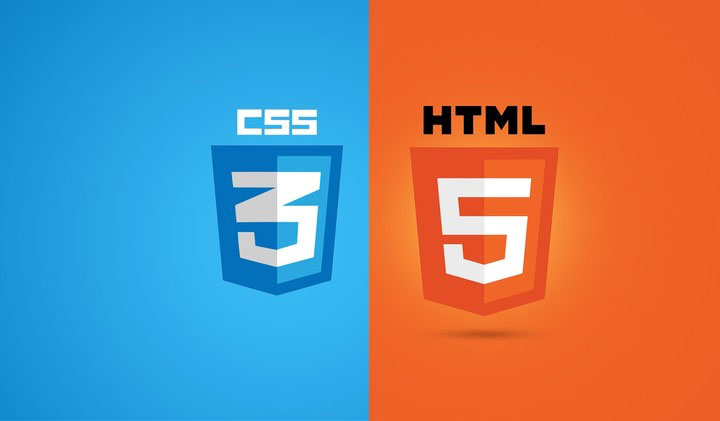

Ce travail m'a permit dapprendre a utiliser le langage html et CSS. J'ai apris les base de html pour faire un site. Cela peut étre trés utile pour ma carriere profesionnel. J'ai trouvé html simple à apprendre. J'ai appris a ecrire, mettre des liens , mettre de images. J'ai aussi appris à utiliser css . Je trouve que css est dur à comprendre au début mais après il devient simple et efficace . On peut faire beaucoup de style different.J'ai appris a modifier esthétiquement un site , a modifier la mise en page . C'est un exercice qui prends beaucoup de temps mais qui est trés important.
source photo : imm.fr